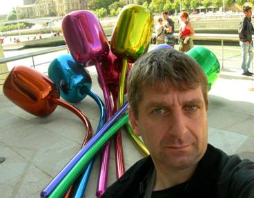

Taller de Clown
(algo más que una técnica de actuación)
Néstor Caniglia - Actor, director, autor y docente teatral
COMIENZA EN MAYO
LOS MIERCOLES DE 19 A 22 HS

Breve historia: Con una formación teatral clásica, en los años 80 descubre la técnica del clown formando parte de una corriente de artistas y grupos míticos de aquellos tiempos.
Co - fundador de Los Kelonios. Equipo artístico que por casi dos décadas, trabajaron utilizando la técnica de clown como base de su propuesta artística.
Desde entonces desarrolla una tarea docente en Argentina y en el exterior.
Como parte de este camino, en 2005 crea como co-autor y actor (junto a Mauricio Kartun, Enrique Federman, Claudio Martínez Bel, Cesar Bordón y Eugenia Guerty):
NO ME DEJES ASÍ. Espectáculo teatral que sigue en escena luego de varias temporadas en Buenos Aires y giras Nacionales e Internacionales.
Actualmente tiene 6 espectáculos en cartel (dos como director y 4 como autor y actor), así como participaciones en TV y cine.
Fundamentos del Seminario:
Es una técnica de actuación de conceptos claros que se incorporará de una manera natural en el accionar escénico de un modo eminentemente práctico.
Se educará la disponibilidad actoral, ampliando su potencial expresivo con precisión y energía.
Descubrir el propio clown abre la puerta a un nuevo camino escénico vital y poético.
También se puede incorporar a las técnicas tradicionales de actuación aportándole un extraordinario manejo expresivo y sensible, descubriendo además, una nueva relación con el público.
Se impulsará a la creación de números o espectáculos propios, individuales y colectivos.
Al finalizar el taller, el alumno hallará un antes y un después en su trabajo.
ANDAMIO 90
INSCRIPCION DE 15 A 19 HS DE LUNES A VIERNES
PARANA 662 PISO 1 ENTRE VIAMONTE Y TUCUMAN
4-3741484 / 4-3728386